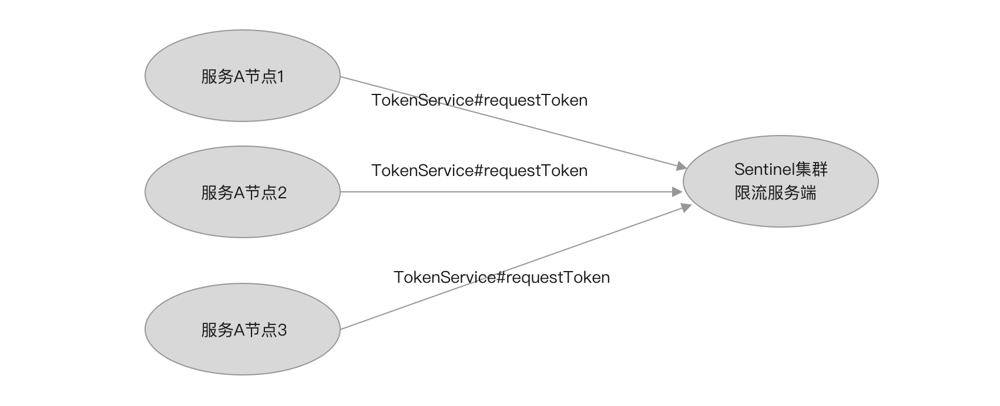

- 01 开篇词：一次服务雪崩问题排查经历.md.html
- 02 为什么需要服务降级以及常见的几种降级方式.md.html
- 03 为什么选择 Sentinel，Sentinel 与 Hystrix 的对比.md.html
- 04 Sentinel 基于滑动窗口的实时指标数据统计.md.html
- 05 Sentinel 的一些概念与核心类介绍.md.html
- 06 Sentinel 中的责任链模式与 Sentinel 的整体工作流程.md.html
- 07 Java SPI 及 SPI 在 Sentinel 中的应用.md.html
- 08 资源指标数据统计的实现全解析（上）.md.html
- 09 资源指标数据统计的实现全解析（下）.md.html
- 10 限流降级与流量效果控制器（上）.md.html
- 11 限流降级与流量效果控制器（中）.md.html
- 12 限流降级与流量效果控制器（下）.md.html
- 13 熔断降级与系统自适应限流.md.html
- 14 黑白名单限流与热点参数限流.md.html
- 15 自定义 ProcessorSlot 实现开关降级.md.html
- 16 Sentinel 动态数据源：规则动态配置.md.html
- 17 Sentinel 主流框架适配.md.html
- 18 Sentinel 集群限流的实现（上）.md.html
- 19 Sentinel 集群限流的实现（下）.md.html
- 20 结束语：Sentinel 对应用的性能影响如何？.md.html
- 21 番外篇：Sentinel 1.8.0 熔断降级新特性解读.md.html
18 Sentinel 集群限流的实现（上）
由于请求倾斜的存在，分发到集群中每个节点上的流量不可能均匀，所以单机限流无法实现精确的限制整个集群的整体流量，导致总流量没有到达阈值的情况下一些机器就开始限流。例如服务 A 部署了 3 个节点，规则配置限流阈值为 200qps，理想情况下集群的限流阈值为 600qps，而实际情况可能某个节点先到达 200qps，开始限流，而其它节点还只有 100qps，此时集群的 QPS 为 400qps。
Sentinel 1.4.0 版本开始引入集群限流功能，目的就是实现精确地控制整个集群的 QPS。
sentinel-cluster 包含以下几个重要模块：
- sentinel-cluster-common-default：公共模块，定义通信协议，包括编码器和解码器接口、请求和响应实体（数据包），与底层使用哪种通信框架无关。
- sentinel-cluster-client-default：集群限流客户端模块，实现公共模块定义的接口，使用 Netty 进行通信，实现自动连接与掉线重连、提供连接配置 API。
- sentinel-cluster-server-default：集群限流服务端模块，实现公共模块定义的接口，使用 Netty 进行通信，同时提供扩展接口对接规则判断的具体实现（TokenService）。
我们回顾一下单机限流的整个工作流程：
- FlowSlot 作为流量切入点，在 entry 方法中调用 FlowRuleChecker#checkFlow 方法判断是否限流；
- FlowRuleChecker 根据资源名称从规则管理器获取配置的限流规则，遍历限流规则；
- 根据限流规则的 clusterMode 决定走本地限流逻辑还是走集群限流逻辑；
- 如果是本地限流，则调用流量效果控制器判断是否拒绝当前请求。
实现集群限流是在第（3）步的基础上，如果限流规则的 clusterMode 配置为集群限流模式，则向集群限流服务端发起远程调用，由集群限流服务端判断是否拒绝当前请求，流量效果控制在集群限流服务端完成。我们结合下图理解。
如图所示，当规则配置为集群限流模式时，通过 TokenService 向集群限流服务端发起请求，根据响应结果决定如何控制当前请求。
集群限流服务端的两种模式
Sentinel 支持两种模式启动集群限流服务端，分别是嵌入模式、独立模式，两种模式都有各种的优缺点。
嵌入模式（Embedded）
集群限流服务端作为应用的内置服务同应用一起启动，与应用在同一个进程，可动态的挑选其中一个节点作为集群限流服务端，如下图所示。
- 优点：无需单独部署，可动态切换服务端。
- 缺点：将集群限流服务嵌入到应用中，作为限流服务端的节点需要处理集群内的其它限流客户端发来的请求，会影响应用的性能。
- 适用场景：适用于单个微服务实现集群内部限流，例如只对服务 A 内部集群限流提供服务。
独立模式（Alone）
集群限流服务端作为一个独立的应用部署，如下图所示。

- 优点：与应用隔离，不影响应用的性能。
- 适用场景：适用于为所有服务实现集群限流提供服务，例如服务 A、服务 B 都需要实现集群限流。
Sentinel 集群限流客户端与集群限流服务端通信只保持一个长连接，底层通信基于 Netty 框架实现，自定义通信协议，并且数据包设计得足够小，网络 I/O 性能方面降到最低影响。而限流服务端处理一次请求都是访问内存，并且计算量少，响应时间短，对限流客户端性能的影响不大，可以参考 Redis 一次 hget 对应用性能的影响。
Sentinel 集群限流对限流服务端的可用性要求不高，当限流服务端挂掉时，可回退为本地限流；嵌入模式并未实现类似于主从自动切换的功能，当服务端挂掉时，客户端并不能自动切换为服务端。所以选择哪种限流服务端启动模式更多的是考虑使用嵌入模式是否会严重影响应用的性能，以及应用是否有必要严重依赖集群限流。
如果服务是部署在 Kubernetes 集群上，使用嵌入模式就可能需要频繁的调整配置，以选择一个节点为集群限流服务端，并且需要调整其它客户端的连接配置，才能让其它客户端连接上服务端。试想一下，当半夜某个节点挂了，而该节点正好是作为集群限流的服务端，Kubernetes 新起的 POD 变成集群限流客户端，此时，所有集群限流客户端都连接不上服务端，也只能退回本地限流。嵌入模式在 Kubernetes 集群上其弊端可谓表现得淋漓尽致。
集群限流规则
集群限流规则也是 FlowRule，当 FlowRule 的 clusterMode 配置为 true 时，表示这个规则是一个集群限流规则。
如果将一个限流规则配置为集群限流规则，那么 FlowRule 的 clusterConfig 就必须要配置，该字段的类型为 ClusterFlowConfig。
ClusterFlowConfig 可配置的字段如下源码所示。
public class ClusterFlowConfig {
private Long flowId;
private int thresholdType = ClusterRuleConstant.FLOW_THRESHOLD_AVG_LOCAL;
private boolean fallbackToLocalWhenFail = true;
// 当前版本未使用
private int strategy = ClusterRuleConstant.FLOW_CLUSTER_STRATEGY_NORMAL;
private int sampleCount = ClusterRuleConstant.DEFAULT_CLUSTER_SAMPLE_COUNT;
private int windowIntervalMs = RuleConstant.DEFAULT_WINDOW_INTERVAL_MS;
}
- flowId：集群限流规则的全局唯一 ID。
- thresholdType：集群限流阈值类型。
- fallbackToLocalWhenFail：失败时是否回退为本地限流模式，默认为 true。
- sampleCount：滑动窗口（LeapArray）构造方法的参数之一，指定 WindowWrap 的数组大小。
- windowIntervalMs：滑动窗口（LeapArray）构造方法的参数之一，指定整个滑动窗口的周期；windowIntervalMs 除以 sampleCount 等于每个 WindowWrap 的窗口时间。
当限流规则配置为集群模式时，限流规则的阈值类型（grade）将弃用，而是使用集群限流配置（ClusterFlowConfig）的阈值类型（thresholdType），支持单机均摊和集群总阈值两种集群限流阈值类型：
- 单机均摊阈值类型：根据当前连接到集群限流服务端的客户端节点数乘以规则配置的 count 作为集群的 QPS 限流阈值。
- 集群总阈值类型：将规则配置的 count 作为整个集群的 QPS 限流阈值。
集群限流规则的动态配置
集群限流规则需要在集群限流客户端配置一份，同时集群限流服务端也需要配置一份，缺一不可。客户端需要取得集群限流规则才会走集群限流模式，而服务端需要取得同样的限流规则，才能正确的回应客户端。为了统一规则配置，我们应当选择动态配置，让集群限流客户端和集群限流服务端去同一数据源取同一份数据。
Sentinel 支持使用名称空间（namespace）区分不同应用之间的集群限流规则配置，如服务 A 的集群限流规则配置和服务 B 的集群限流规则配置使用名称空间隔离。
前面我们分析了 Sentinel 动态数据源的实现原理，并且也基于 Spring Cloud 提供的动态配置功能完成一个动态数据源。为了便于理解，也为了便于测试，我们选择自己实现一个简单的动态数据源（SimpleLocalDataSource），实现根据名称空间加载集群限流规则。
SimpleLocalDataSource 继承 AbstractDataSource，同时构造方法要求传入名称空间，用于指定一个动态数据源对象只负载加载指定名称空间的集群限流规则。SimpleLocalDataSource 实现代码如下所示。
public class SimpleLocalDataSource
extends AbstractDataSource<String, List<FlowRule>>
implements Runnable{
public SimpleLocalDataSource(String namespace) {
super(new SimpleConverter<String, List<FlowRule>>() {});
// 模拟 Spring 容器刷新完成初始化加载一次限流规则
new Thread(this).start();
}
@Override
public String readSource() throws Exception {
// 获取动态配置，
return "";
}
@Override
public void close() throws Exception {
}
@Override
public void run() {
try {
// 休眠 6 秒
Thread.sleep(6000);
getProperty().updateValue(loadConfig());
} catch (Exception e) {
e.printStackTrace();
}
}
}
SimpleLocalDataSource 构造方法中启动一个线程，用于实现等待动态数据源对象注册到 ClusterFlowRuleManager 之后再模拟加载一次规则。由于是测试，所以 readSource 方法并未实现，我们直接在 SimpleConverter 这个转换器中虚构一个集群限流规则，代码如下。
public class SimpleConverter extends Converter<String, List<FlowRule>>() {
@Override
public List<FlowRule> convert(String source) {
List<FlowRule> flowRules = new ArrayList<>();
FlowRule flowRule = new FlowRule();
flowRule.setCount(200);
flowRule.setResource("GET:/hello");
// 集群限流配置
flowRule.setClusterMode(true);
ClusterFlowConfig clusterFlowConfig = new ClusterFlowConfig();
clusterFlowConfig.setFlowId(10000L); // id 确保全局唯一
flowRule.setClusterConfig(clusterFlowConfig);
flowRules.add(flowRule);
return flowRules;
}
}
接下来，我们将使用这个动态数据源实现集群限流客户端和服务端的配置。
集群限流客户端配置
在需要使用集群限流功能的微服务项目中添加 sentinel-cluster-client-default 的依赖。
<dependency>
<groupId>com.alibaba.csp</groupId>
<artifactId>sentinel-cluster-client-default</artifactId>
<version>${version}</version>
</dependency>
将身份设置为集群限流客户端（CLUSTER_CLIENT），并且注册客户端配置（ClusterClientConfig），代码如下。
@SpringBootApplication
public class WebMvcDemoApplication {
static {
// 指定当前身份为 Token Client
ClusterStateManager.applyState(ClusterStateManager.CLUSTER_CLIENT);
// 集群限流客户端配置，ClusterClientConfig 目前只支持配置请求超时
ClusterClientConfig clientConfig = new ClusterClientConfig();
clientConfig.setRequestTimeout(1000);
ClusterClientConfigManager.applyNewConfig(clientConfig);
}
}
在 Spring 项目中，可通过监听 ContextRefreshedEvent 事件，在 Spring 容器启动完成后再初始化创建动态数据源、为 FlowRuleManager 注册动态数据源的 SentinelProperty，代码如下。
@SpringBootApplication
public class WebMvcDemoApplication implements ApplicationListener<ContextRefreshedEvent> {
@Override
public void onApplicationEvent(ContextRefreshedEvent contextRefreshedEvent) {
// 指定名称空间为 serviceA，只加载这个名称空间下的限流规则
SimpleLocalDataSource ruleSource = new SimpleLocalDataSource("serviceA");
FlowRuleManager.register2Property(ruleSource.getProperty());
}
}
最后注册用于连接到集群限流服务端的配置（ClusterClientAssignConfig），指定集群限流服务端的 IP 和端口，代码如下。
@SpringBootApplication
public class WebMvcDemoApplication {
static {
ClusterClientAssignConfig assignConfig = new ClusterClientAssignConfig();
assignConfig.setServerHost("127.0.0.1");
assignConfig.setServerPort(11111);
// 先指定名称空间为 serviceA
ConfigSupplierRegistry.setNamespaceSupplier(()->"serviceA");
ClusterClientConfigManager.applyNewAssignConfig(assignConfig);
}
}
当 ClusterClientConfigManager#applyNewAssignConfig 方法被调用时，会触发 Sentinel 初始化或重新连接到集群限流服务端，所以我们看不到启动集群限流客户端的代码。Sentinel 还支持当客户端与服务端意外断开连接时，让客户端不断的重试重连。
注意看，我们在调用 ClusterClientConfigManager#applyNewAssignConfig 方法之前，先调用了 ConfigSupplierRegistry#setNamespaceSupplier 方法注册名称空间，这是非常重要的一步。当客户端连接上服务端时，会立即发送一个 PING 类型的消息给服务端，Sentinel 将名称空间携带在 PING 数据包上传递给服务端，服务端以此获得每个客户端连接的名称空间。
完成以上步骤，集群限流客户端就已经配置完成，但这些步骤都只是完成集群限流客户端的配置，如果集群限流服务端使用嵌入模式启动，那么还需要在同一个项目中添加集群限流服务端的配置。
集群限流服务端配置
如果使用嵌入模式，则可直接在微服务项目中添加 sentinel-cluster-server-default 的依赖；如果是独立模式，则单独创建一个项目，在独立项目中添加 sentinel-cluster-server-default 的依赖。
<dependency>
<groupId>com.alibaba.csp</groupId>
<artifactId>sentinel-cluster-server-default</artifactId>
<version>${version}</version>
</dependency>
在独立模式下，需要我们自己手动创建 ClusterTokenServer 并启动，在启动之前需指定服务监听的端口和连接最大空闲等待时间等配置，代码如下。
public class ClusterServerDemo {
public static void main(String[] args) throws Exception {
ClusterTokenServer tokenServer = new SentinelDefaultTokenServer();
// 配置短裤和连接最大空闲时间
ClusterServerConfigManager.loadGlobalTransportConfig(new ServerTransportConfig()
.setIdleSeconds(600)
.setPort(11111));
// 启动服务
tokenServer.start();
}
}
接着我们需要为服务端创建用于加载集群限流规则的动态数据源，在创建动态数据源时，需指定数据源只加载哪个名称空间下的限流规则配置，如下代码所示。
ClusterFlowRuleManager.setPropertySupplier(new Function<String, SentinelProperty<List<FlowRule>>>() {
// ClusterFlowRuleManager 会给 apply 方法返回的 SentinelProperty 注册监听器
@Override
public SentinelProperty<List<FlowRule>> apply(String namespace) {
// 创建动态数据源
SimpleLocalDataSource source = new SimpleLocalDataSource(namespace);
// 返回数据源的 SentinelProperty
return source.getProperty();
}
});
从代码中可以看出，我们注册的是一个 Java8 的 Function，这个 Function 的 apply 方法将在我们注册名称空间时触发调用。
现在，我们为集群限流服务端注册名称空间，以触发动态数据源的创建，从而使 ClusterFlowRuleManager 拿到动态数据源的 SentinelProperty，将规则缓存更新监听器注册到动态数据源的 SentinelProperty 上。注册名称空间代码如下。
// 多个应用应该对应多个名称空间，应用之间通过名称空间互相隔离
ClusterServerConfigManager.loadServerNamespaceSet(Collections.singleton("serviceA"));
名称空间可以有多个，如果存在多个名称空间，则会多次调用 ClusterFlowRuleManager#setPropertySupplier 注册的 Function 对象的 apply 方法创建多个动态数据源。多个应用应该对应多个名称空间，应用之间通过名称空间互相隔离。
由于我们在 SimpleLocalDataSource 的构造方法中创建一个线程并延迟执行，当以上步骤完成后，也就是 SimpleLocalDataSource 的延时任务执行时，SimpleLocalDataSource 会加载一次限流规则，并调用 SentinelProperty#updateValue 方法通知 ClusterFlowRuleManager 更新限流规则缓存。
在实现项目中，我们自定义的动态数据源可通过定时拉取方式从配置中心拉取规则，也可以结合 Spring Cloud 动态配置使用，通过监听动态配置改变事件，获取最新的规则配置，而规则的初始化加载，可通过监听 Spring 容器刷新完成事件实现。
动态配置为嵌入模式提供的支持
如果是嵌入模式启动，除非一开始我们就清楚的知道应用会部署多少个节点，这些节点的 IP 是什么，并且不会改变，否则我们无法使用静态配置的方式去指定某个节点的角色。Sentinel 为此提供了支持动态改变某个节点角色的 API，使用方式如下：
http://<节点 ip>:<节点 port>/setClusterMode?mode={state}
其中 {state} 为 0 代表集群限流客户端，为 1 代表集群限流服务端。当一个新的节点被选为集群限流服务端后，旧的集群限流服务端节点也应该变为集群限流客户端，并且其它的节点都需要作出改变以连接到这个新的集群限流服务端。
Sentinel 提供动态修改 ClusterClientAssignConfig、ClusterClientConfig 的 API，使用方式如下：
http://<节点 ip>:<节点 port>/cluster/client/modifyConfig?data={body}
其中 {body} 要求是 JSON 格式的字符串，支持的参数配置如下：
- serverHost：集群限流服务端的 IP 地址
- serverPort：集群限流服务端的端口
- requestTimeout：请求的超时时间
除使用 API 可动态修改节点角色、客户端连接到服务端的配置之外，Sentinel 还支持通过动态配置方式修改，但无论使用哪种方式修改都有一个弊端：需要人工手动配置。
虽然未能实现自动切换，但不得不称赞的是，Sentinel 将动态数据源与 SentinelProperty 结合使用，通过 SentinelProperty 实现的观察者模式，提供更为灵活的嵌入模式集群限流角色转换功能，支持以动态修改配置的方式去重置嵌入模式集群中任一节点的集群限流角色。
ClusterClientAssignConfig（客户端连接服务端配置）、ServerTransportConfig（服务端传输层配置：监听端口、连接最大空闲时间）、ClusterClientConfig（客户端配置：请求超时）、ClusterState（节点状态：集群限流客户端、集群限流服务端）都支持使用动态数据源方式配置。
- 当动态改变 ClusterClientAssignConfig 时，Sentinel 重新创建客户端与服务端的连接；
- 当动态改变 ServerTransportConfig 时，Sentinel 重启集群限流服务端；
- 对于嵌入模式，当动态改变 ClusterState 时，如果改变前与改变后的状态不同，例如从集群限流客户端角色变为集群限流服务端角色，则关闭客户端与服务端的连接，并且启动服务监听客户端连接，而其它的节点也会监听到动态配置改变，重新连接到这个新的集群限流服务端。